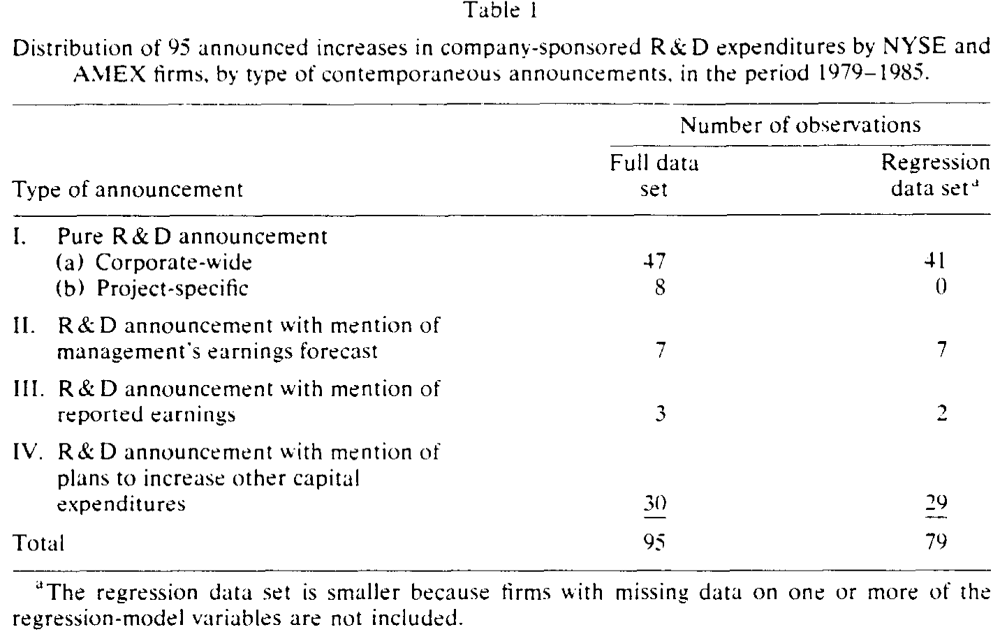
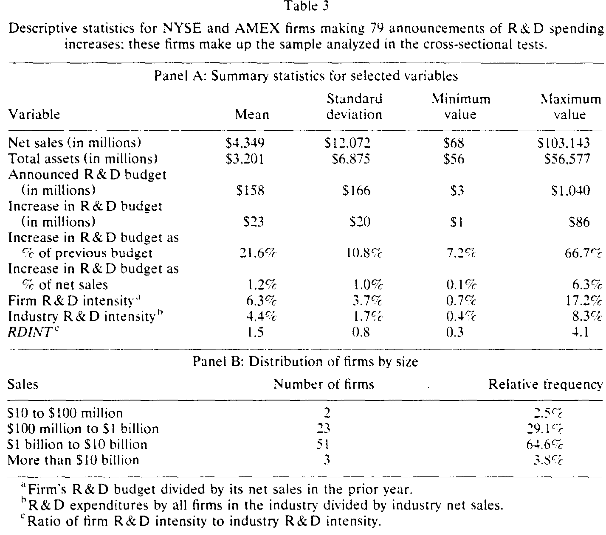
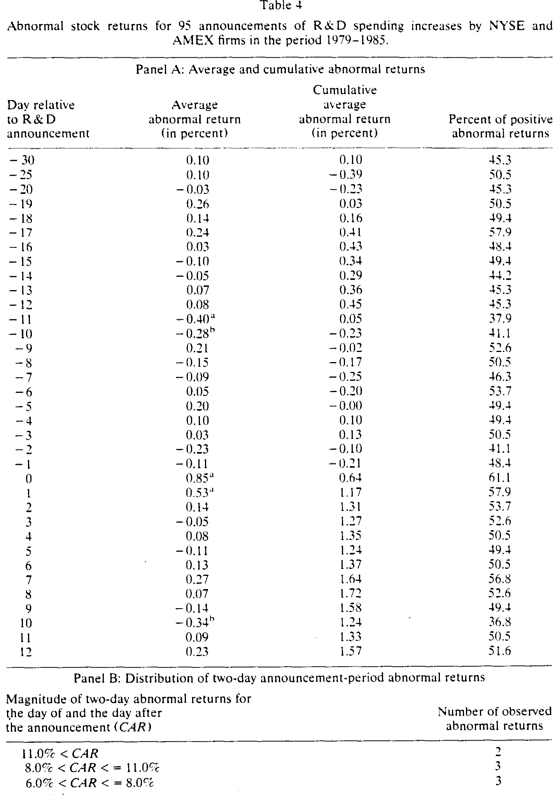
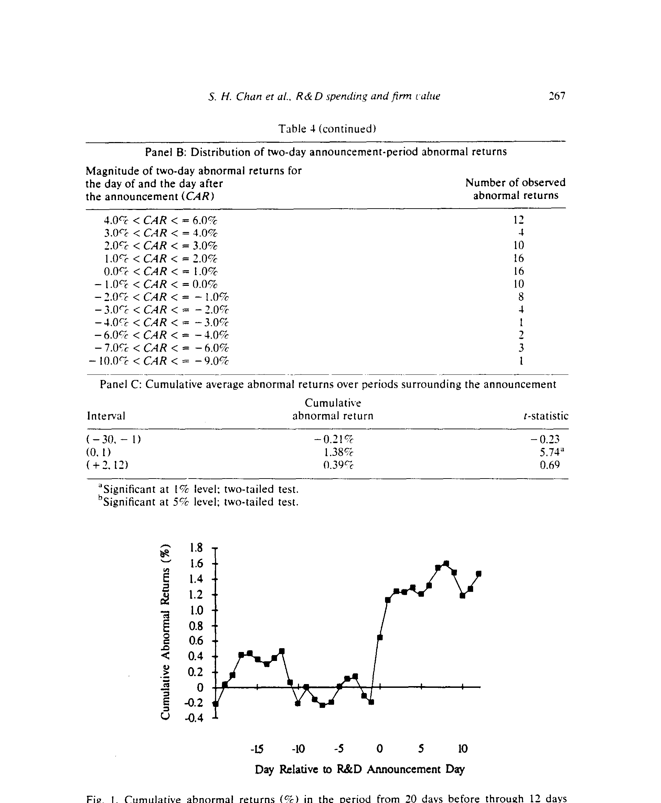
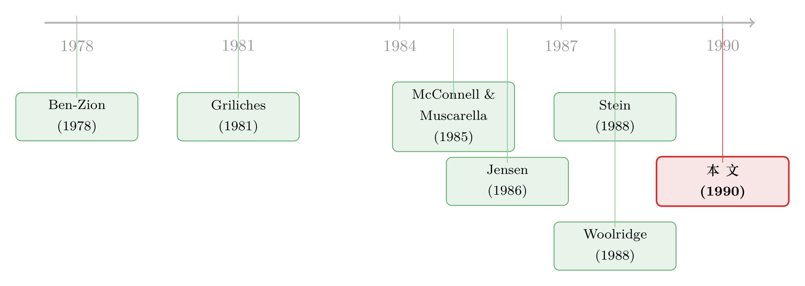

市场真的「目光短浅」吗？——一份 1990 年的 R&D 公告答卷
本文读的是 Chan, Martin & Kensinger (1990, Journal of Financial Economics)：他们用 95 起「企业自筹研发支出将增加」的公告做事件研究，发现公告当日与次日的两天累计异常收益平均为 +1.38%（t=5.74，1% 水平显著）——哪怕这笔研发是在盈利下滑的同时宣布的，市场依旧给了正面回应。但故事没有就此结束：高科技公司被奖励，低科技公司反而被惩罚。市场不是「看不见远方」，它只是挑着看。
1 一个被反复提起的指控
上世纪八十年代的美国，敌意收购与杠杆重组此起彼伏。学界和财经媒体里弥漫着一种担忧：资本市场是「近视」的（market myopia）。这个指控的逻辑链条很顺：投资者看不到当期盈利之外的东西，于是那些回报周期漫长的投资——典型如研究与开发 (research and development, R&D)——就成了牺牲品；经理人怕短期盈利一旦下滑就会压低股价、把公司变成更诱人的收购标的，于是干脆不投了。顺着这个逻辑往下说，结论几乎呼之欲出：只要拆掉收购的威胁，管理层就能放心地为长远布局。
这个说法听起来天衣无缝，甚至带着一点为长期主义辩护的道德正当性。Pollak (1989) 报告说，在研发支出排名前 200 的公司里，那 24 家在过去三年经历过并购或重组的企业，研发支出从 1986 到 1987 年下降了 5.3%，而其余 176 家却增长了 5.4%。数字摆在那里，似乎坐实了「重组扼杀创新」的判断。
但这里有一个被悄悄跳过的前提：它假设市场真的会因为研发拖累了当期盈利而惩罚公司。这个前提，从来没有被正面检验过。
2 把指控翻过来问
Jensen (1986a) 给出了一个针锋相对的反问：会不会是经理人自己近视，而市场并不近视？经理人往往持股很少，薪酬又常常与会计盈利之类的短期指标挂钩；出于职业安全或者「想管一个更大的摊子」的动机，他们的利益本就可能与股东背道而驰。也就是说，「不敢投研发」可能根本不是市场逼出来的，而是经理人自己的算盘。
更有意思的是 Meulbroek et al. (1990) 的发现：公司在通过反收购章程修正案 (antitakeover amendments) 之后，研发支出相对行业均值反而下降了。如果「近视」真是收购威胁造成的，那么撑起了「保护伞」之后研发应该回升才对——结果恰恰相反。这等于从侧面说，managerial myopia 的根源另有其人。
于是，一个自然的问题浮出水面：如果你想知道市场到底近不近视，最干净的办法，是直接去看市场在公司宣布「我要多花钱搞研发」时，用脚投了什么票。 这正是本文要做的事。
3 识别策略：一场关于「公告」的事件研究
本文的核心方法是事件研究 (event study)，用标准的市场模型 (market model) 来度量经过市场和风险调整后的异常收益。思路并不复杂，但每一步都很讲究。
事件与「新信息」的定义。 作者假设投资者对研发支出抱有朴素预期 (naive expectations)——即默认明年与上一财年持平。在这个假设下，一则研发公告只有当它相对去年的计划发生了变化时，才算「新信息」。所以本文只收集增加研发支出的公告（数据期内根本没有出现过单独削减研发的公告）。
事件窗口与参数估计。 事件窗口取公告日前后的第 −30 到 +12 天。市场组合用等权 CRSP 指数代理，市场模型参数用事件窗口前后共 215 天估计（−141 到 −31，以及 +13 到 +151）。这里有一个值得称道的细节：为了防止公告本身引起 beta 漂移而污染结果，作者借鉴 Ruback (1982) 和 Alexander et al. (1984) 的做法，事件前的异常收益用事件前估计的参数算，事件后的用事件后估计的参数算。他们还检验了 beta 在前后两段是否真的发生了位移——95 起公告里，斜率系数 50 升 45 降，但只有 8 起在 5% 水平上显著，可见 beta 漂移不是问题。
为什么看「第 0、1 天」而不是「−1、0 天」。 本文大部分公告来自道琼斯新闻线 (DJNW, the "Broad Tape")，它通常比《华尔街日报》(WSJ) 的见报日早一天或更多。所以 DJNW 的日期更接近信息首次公开的时刻，作者把公告日定在第 0 天，并看「0 和 1」两天的窗口。
最关键的一步：把选择偏差摆上台面。 经理人有时增加了研发却不公告——本文最担心的是，他们可能只在预期股价会正面反应时才公告。如果是这样，那「公告带来正收益」就成了同义反复。作者用一个 PROBIT 分析（见原文第 4.3 节）来回应：把本文的公告样本，与一组「同样增加了研发、却没有公告」的控制组公司做对照，检验「是否公告」能否被预期反应所解释。这一步，是把本文从「描述性事实」抬升到「可信证据」的支点。
4 数据：95 起公告，64 家大公司
样本来自 1979 年 6 月到 1985 年 6 月间、CRSP 日收益文件覆盖的公司所做的、关于增加企业自筹研发支出的公告。公告日期取自道琼斯新闻检索服务（覆盖 DJNW、WSJ 与 Barron's）。从最初的 167 起公告中，作者剔除了 72 起，理由包括：重复公告（28 起）、由客户或政府合同资助的研发（14 起，为聚焦私人自筹）、表述含糊缺乏具体性（13 起）、加拿大公司（6 起，为统一用 Business Week 的「R&D Scoreboard」构造行业变量）、与资本支出下降同时公布（3 起）、与破产声明同时公布（1 起）、多年期研发承诺（7 起，因无法分摊当年金额）。
最终剩下 95 起公告，来自 64 家公司；用于横截面回归的子样本因变量缺失而更小，为 79 起、51 家公司。表 1 按「公告日同时披露了什么信息」把样本分了类——纯研发公告、附带盈利预测、附带已报盈利、附带其他资本支出计划。

Table I
这批公司都不小。如表 3 的描述统计所示，样本公司平均年销售额 $4.3 billion（仅两家低于 1 亿美元），平均研发预算 $158 million（最低 300 万），而且平均而言，样本公司的研发强度是其所在行业平均水平的 1.5 倍。行业分布上（表 2），制药业贡献了约 30% 的公告，化工占 13.5%；约 66% 来自高科技公司，其余 34% 来自制造业或自然资源类公司。这个高科技 / 低科技的划分，后面会成为整个故事的转折点。

Table 3
5 主要结果：市场给了一个响亮的「是」
先看平均效应。结果相当干净利落（见表 4）：
- 公告当日（第 0 天）的平均异常收益 (AAR) 为
+0.85%，是整个 43 天窗口里最大的单日收益，t 值+4.99，1% 水平显著； - 次日（第 1 天）为
+0.53%，t 值+3.12，依然显著； - 两天合计的累计异常收益 (CAR) 为
+1.38%，t 值+5.74，1% 水平显著。
作为对照，窗口里其余日子的 AAR 大约只有 −0.01%（−30 到 −1 期）和 0.04%（2 到 12 期）。换句话说，所有的股价冲击都集中在公告那两天，事前没有可察觉的信息泄露，事后也没有滞后漂移。

Table 4
作者还做了几道稳健性的「体检」，确认这不是几只异常股票拉出来的假象：第 0、1 两天，正收益的比例分别是 61% 和 58%，而前后估计期的基准只有 49%（二项符号检验的 Z 统计量在 1% 水平显著）；95 起公告里有 50 起的两天 CAR 至少达到 1%。无论是把样本缩到 55 起「无污染」的纯研发公告（两天 CAR 为 +1.34%，与全样本的 +1.38% 几乎一致），还是换用 Masulis (1980) 的对照期原始收益法，结论都不变。
把整条累计异常收益曲线画出来，更直观（图 1）：在公告日之前和之后都没有持续的上行或下行漂移，唯独在第 0、1 天处「跳」了一下。

Figure 1: Cumulative abnormal returns t%) in the period from 10 days before through 12 days
到这一步，「市场近视」的指控就被正面驳回了一大半：市场不仅不惩罚长期研发投入，反而当场奖励它。
6 但真正关键的一步：在「坏消息」里检验近视
平均为正，还不足以一锤定音。近视论者真正的主张是：当研发伴随着盈利下滑时，市场会因为盯着当期利润而给负反馈。所以本文最锋利的检验，是把「研发增加 + 盈利失望」同时发生的那些公告单拎出来看。
这里就是 reasoning 的命门——如果市场真的近视，那么在盈利下滑的阴影里宣布加码研发，本该招来一记耳光。然而数据给出的回答是：即便在盈利下滑的同时宣布增加研发，平均的股价反应依然是正的。 这意味着，投资者把研发当成了一项有正净现值的投资来定价，而不是当成一笔拖累利润的开销。市场看得见当期盈利之外的东西。
7 于是反转出现：市场不是「看不见」，而是「挑着看」
如果故事到此为止，那不过是又一篇「市场有效」的注脚。本文真正的贡献，藏在它的横截面分析里——并非所有研发都被一视同仁地奖励。
摘要里讲得明明白白：宣布增加研发的高科技公司，平均获得正的异常收益；而低科技公司的同类公告，却伴随着负的异常收益。 更进一步，在横截面回归中，「研发强度高于行业平均」能带来更大的股价上涨，这个效应只在高科技行业里成立。
这才是本文最深的一层洞见：市场对研发的态度，不是「近视」与否的二元开关，而是一套有区分能力的定价机制。在技术机会丰沃的行业里，多投研发是抢占未来；在技术机会贫瘠的行业里，硬砸研发更像是把钱投进了一个回报存疑的黑洞——市场对前者点头，对后者摇头。所谓「目光短浅」，恰恰说反了：市场看得足够远，远到能分辨哪一笔长期投资值得期待。
这一点和后来「市场如何给创新定价」的研究一脉相承。关于市场会不会在某些时期对创新「贴错价签」，可参见《泡沫里，市场给创新贴错了两次价签》；而关于研发那种「赌运气」式的技术风险如何进入折现率，可参见《R&D 的技术风险明明是「赌运气」，为什么它的折现率反而更高？》。
8 文献脉络
把这篇论文放回它所在的坐标系，能看得更清楚。
最早的一脉，是研究研发支出与公司年末市场价值之间的关系：Ben-Zion (1978, 1984)、Griliches (1981)、Hirschey (1982)、Pakes (1985)、Jose et al. (1986)、Cockburn & Griliches (1988) 以及 Hall (1988)，大多沿着「研发能否解释 Tobin's Q」的思路展开。它们告诉我们研发与价值正相关，但用的是横截面的存量关系，难以分清因果与时点。
接着，一条更接近本文方法的支线出现了：用事件研究看市场对长期投资公告的即时反应。McConnell & Muscarella (1985) 发现市场对资本支出增加的公告平均正面回应、对减少则负面回应（油气勘探除外）——但他们样本里只有 8 起涉及研发，无法对研发单独下结论。Woolridge (1988) 把范围扩到合资、设备购置、新产品、研发等多种战略投资，同样报告了正向反应；Jarrell et al. (1985) 则对 62 起「新研发项目」公告报告了正向反应，并指出高研发公司并不更容易被收购。

与此同时，「市场近视」之争本身在理论上被点燃：Stein (1988) 给出了收购威胁导致经理人短视的模型，而 Jensen (1986a) 提出了相反的「经理人近视、市场不近视」的视角（关于 Jensen 这一思想的延展，可参见《现金为什么一定要「还」出去？——四十年后，重读 Jensen 的自由现金流》）。本文恰好坐落在这两条线的交汇处：它用事件研究的方法，去回答市场近视之争里那个一直悬而未决的问题——当研发碰上盈利下滑时，市场到底会怎样——并补上了一个此前文献没认真处理的维度：行业技术水平的异质性。
9 评论与延伸（Q&A + 研究方向）
(a) 几个可能的疑问
Q：「公告带来正收益」会不会只是因为经理人专挑利好时才公告？
这正是本文最警觉的地方。作者用 PROBIT 分析（第 4.3 节），把公告样本与一组「同样增加研发却不公告」的控制组对照，检验「是否公告」能否被预期股价反应解释。这一步把潜在的自选择偏差摆上了台面，而不是假装它不存在——这是本文方法论上最值得肯定的设计。
Q：1.38% 这个量级算大还是小？
在两天窗口里，这是一个相当干净且统计上极强（t=5.74）的效应。它本身不算惊人的大，但关键不在绝对幅度，而在于符号为正、且在盈利下滑时依然为正——这才是对「近视论」的直接反驳。况且公告日方差显著上升（第 0、1 天标准差 2.7% 与 2.0%，其余日约 1.5%），正提示了横截面上反应是分化的。
Q：为什么要用「naive expectations」这么强的假设？
因为研发计划缺乏一个像分析师盈利预测那样现成的市场预期基准。假设投资者默认「与去年持平」，是为了让「公告了增加」能被干净地识别为新信息。这当然是简化：若市场早已部分预期到加码，真实效应会被低估——也就是说，1.38% 可能是个保守的下界。
Q：高科技正、低科技负，会不会只是「高科技股本来就涨得多」的混淆？
不太可能，因为这是经过市场模型风险调整后的异常收益，已经扣掉了 beta 解释的部分。更有说服力的是横截面结果：「研发强度高于行业均值」只在高科技行业里带来更大涨幅——这是一个交互效应，而非简单的行业涨跌差异。
Q：这是不是就证明了市场完全有效、毫不近视？
没那么绝对。本文证明的是市场不会机械地惩罚拖累当期盈利的研发，并且能按行业技术机会区分对待。它没有、也无法证明市场对研发的定价在量级上完全正确。「不近视」和「定价精确」是两件事。
Q：把客户/政府资助的研发剔掉，会不会丢掉了重要信息？
这是一个合理的取舍。作者的目的是聚焦企业自筹、用于开发新产品/工艺的研发，因为只有这部分才真正反映管理层的自主长期投资决策；政府合同资助的研发，其信息含义完全不同（更像订单而非投资），混进来反而会污染检验。
(b) 几个可能的研究问题与提案
1. 研发公告在债券市场的反应。 【经济故事】研发是高风险长周期投资，对股东可能是期权式的利好，但对债权人未必——它可能抬高资产波动率，稀释既有债务的安全垫。股价涨、债价未必涨，甚至可能跌。【可行性】中。需要把本文式的研发公告样本，与 TRACE（2002 年后）或更早的债券交易数据匹配；识别上可用同一发行人股债反应之差做事件研究。难点在于早期债券交易数据稀疏，样本可能要前移到 2000 年代。
2. 高科技 / 低科技的「市场区分能力」是否随时间增强。 【经济故事】若市场确实在按技术机会给研发定价，那么在信息披露更充分、分析师覆盖更密的今天，这种区分应当更锐利；反之若是噪声，则不稳定。【可行性】高。把本文样本期延展到 2020 年代，重做高低科技分组的横截面回归，看交互系数的时间趋势即可。数据（Compustat R&D + CRSP + 行业分类）现成。
3. 外资持有人是否更「看得远」。 【经济故事】如果近视源于某类投资者的短期视角，那么持有人结构应当影响研发公告的反应——例如长期外资机构持股高的公司，研发利好是否被更充分地定价？【可行性】中。需要 13F/FactSet 的机构与外资持股数据匹配研发公告，识别上可用持股结构的横截面差异，但内生性（好公司既吸引长钱又敢投研发）需要工具变量或准自然实验来处理。
4. 盈利下滑 × 研发加码的「双信号」如何被拆解。 【经济故事】本文发现即便盈利下滑、研发利好依然为正，但没有进一步拆开：是市场把研发的好消息盖过了盈利的坏消息，还是把研发本身当成了对未来盈利的信号？【可行性】高。可用分析师盈利预测修正作为中介变量，检验研发公告后分析师对长期盈利预测的上调，是否解释了股价反应。数据用 I/B/E/S。
10 我的判断
这是一篇方法干净、问题锋利的事件研究。它最大的贡献有两点：其一，用一个直接、可检验的设计，把「市场近视」从一句流行的修辞，变成了一个可以被数据证伪的命题——而数据投了反对票，哪怕在盈利下滑的逆风里也是如此；其二，它没有停在「市场有效」的安全答案上，而是揭示了一个更细腻的事实：市场对研发的奖惩取决于行业的技术机会，高科技被奖励、低科技被惩罚。这把「近视 vs. 不近视」的二元争论，推进到了「市场如何有区分地为长期投资定价」的层面。
对识别的担忧，我有两点。一是 naive expectations 假设：把基准定为「与去年持平」虽然干净，但若市场已部分预期加码，效应会被系统性低估，1.38% 的解读需要这层保留。二是选择偏差虽被 PROBIT 处理，却难言根除：控制组是「增加研发但未公告」的公司，但「为何不公告」本身可能与未观测的公司特质相关，PROBIT 能缓解、不能完全堵死这条暗路。
后续我最想看到的，是把这套检验搬到信用市场和持有人结构上去：研发利好在股东和债权人之间如何分配、长期资金（包括外资机构）是否把研发定价得更充分。这些问题，恰恰是 1990 年的数据条件还回答不了、而今天可以回答的。
参考文献
- Ben-Zion, Uri (1978). The investment aspects of nonproductive expenditures: An empirical test. Journal of Economics and Business 30, 224–229.
- Cockburn, Iain and Zvi Griliches (1988). Industry effects and appropriability measures in the stock market's valuation of R&D and patents. American Economic Review Proceedings 78, 419–423.
- Griliches, Zvi (1981). Market value, R and D, and patents. Economics Letters 7, 183–187.
- Hirschey, Mark (1982). Intangible capital aspects of advertising and R and D expenditures. Journal of Industrial Economics 30, 375–390.
- Jarrell, Gregg A., Ken Lehn, and M. Wayne Marr (1985). Institutional ownership, tender offers, and long-term investments. Office of the Chief Economist, Securities and Exchange Commission, Washington, DC.
- Jensen, Michael C. (1986a). The takeover controversy: Theory and evidence. Midland Corporate Finance Journal 4, 6–31.
- Jose, Manuel L., Len M. Nichols, and Jerry L. Stevens (1986). Contributions of diversification, promotion, and R&D to the value of multiproduct firms: A Tobin's Q approach. Financial Management 15, 33–42.
- Masulis, Ronald W. (1980). The effects of capital structure change on security prices: A study of exchange offers. Journal of Financial Economics 8, 139–177.
- McConnell, John J. and Chris J. Muscarella (1985). Corporate capital expenditure decisions and the market value of the firm. Journal of Financial Economics 14, 399–422.
- Meulbroek, Lisa K., Mark L. Mitchell, J. Harold Mulherin, Jeffry M. Netter, and Annette B. Poulsen (1990). Shark repellents and managerial myopia: An empirical test. Journal of Political Economy 98, 1108–1117.
- Pakes, Ariel (1985). On patents, R and D, and the stock market rate of return. Journal of Political Economy 93, 390–409.
- Ruback, Richard S. (1982). The effects of discriminatory price control decisions on equity values. Journal of Financial Economics 10, 83–105.
- Stein, Jeremy C. (1988). Takeover threats and managerial myopia. Journal of Political Economy 96, 61–80.
- Woolridge, J. Randall (1988). Competitive decline and corporate restructuring: Is a myopic stock market to blame? Journal of Applied Corporate Finance 1, 26–36.